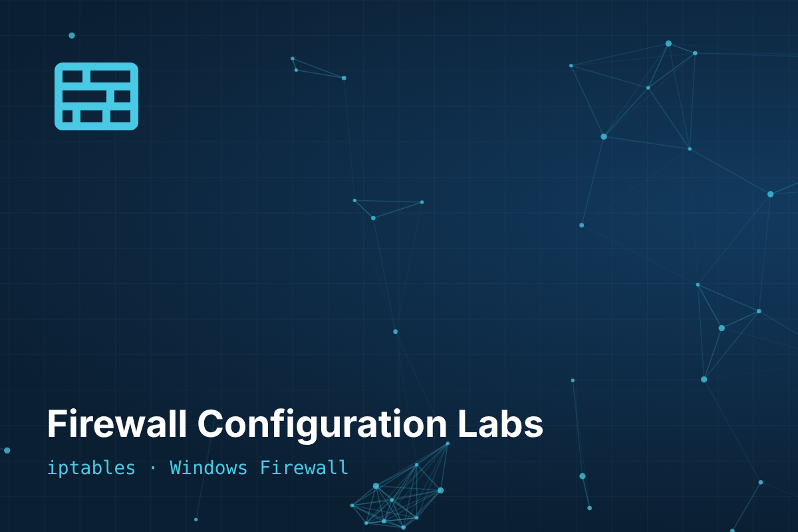
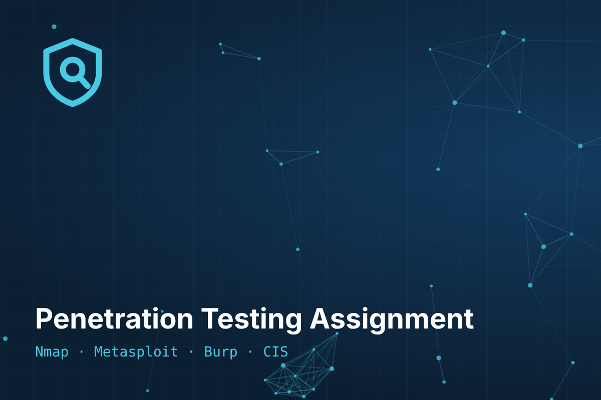

Chan Sao Yan
Aspiring IT security engineer with hands-on lab experience in firewall configuration, Linux hardening against CIS Benchmarks, and testing with Kali Linux, Nmap, Metasploit and Burp Suite. Top 25% of my cohort.
> configure · harden · test · document
Contents
This portfolio supports my application for Assistant Engineer (IT Security), Job ID MCF-2026-1825342. Every page links back to a requirement in the job advertisement.
Job Fit
Each requirement in the job ad, matched to my evidence.
Open →Projects
4 lab projects with screenshots and reports.
Open →Experience
Education, work and leadership timeline.
Open →Certifications
Awards and courses, with copies.
Open →About
How I work, leadership and languages.
Open →Resume
View or download my resume (PDF).
Open →Professional Goal
I want to start my career in hands-on IT security deployment: configuring, hardening and testing systems, and keeping clear records of every step. The Assistant Engineer (IT Security) role matches that directly.
Over the next two years I aim to finish my diploma (2028), and to build hands-on experience with Syslog and endpoint protection.
I bring careful, procedure-driven work, clear test records and reports, and readiness to work shifts, including overnight.
Quick facts
What I can do
Configure and secure networks
VLANs, a Wireless LAN Controller, ACLs and routing in Cisco Packet Tracer; inbound and outbound firewall rules with Windows Firewall and iptables.
Harden and test systems
CIS Benchmark checks and penetration testing of a Linux VM in a lab.
Record and report
Test findings, remediation steps, device configurations and topology diagrams.
Featured projects

Firewall Configuration Labs
Configured inbound and outbound rules to restrict unauthorised network traffic.
Proves: Basic firewall configuration
Network Security Project
Built a segmented network in Cisco Packet Tracer that operated as designed.
Proves: Configuration, troubleshooting, network drawings

Penetration Testing Assignment
Tested a Linux VM, benchmarked it against CIS and wrote a full report with remediation.
Proves: OS hardening, testing and recording results
Let's talk
In my labs I've configured firewall rules, built and documented a segmented network, and tested and benchmarked a Linux system, recording every result in a full report. I'd welcome the chance to bring that care to your IT security team.